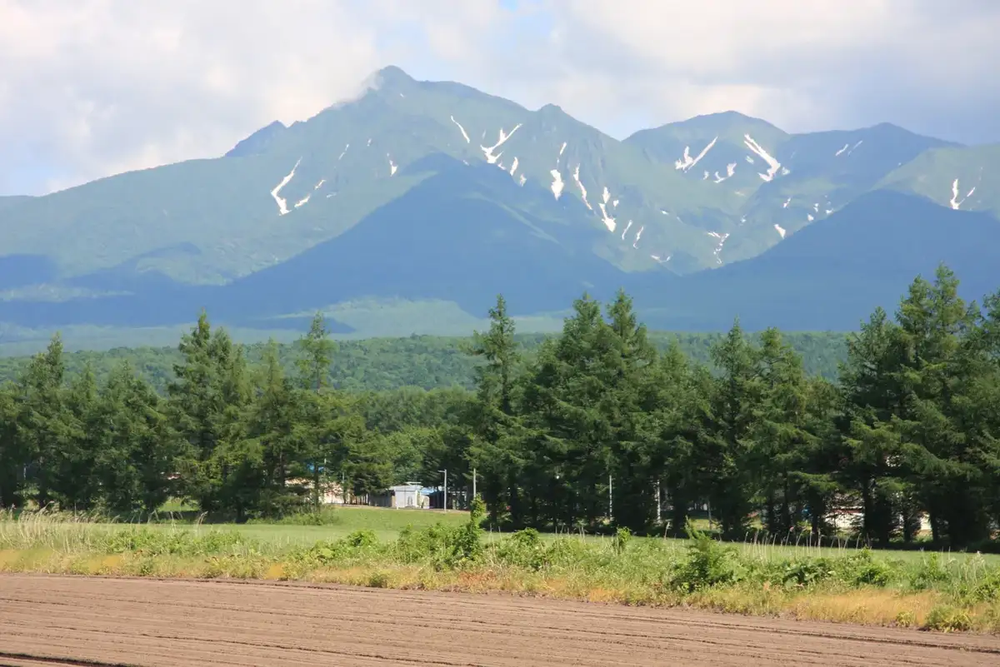
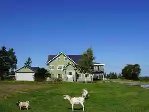
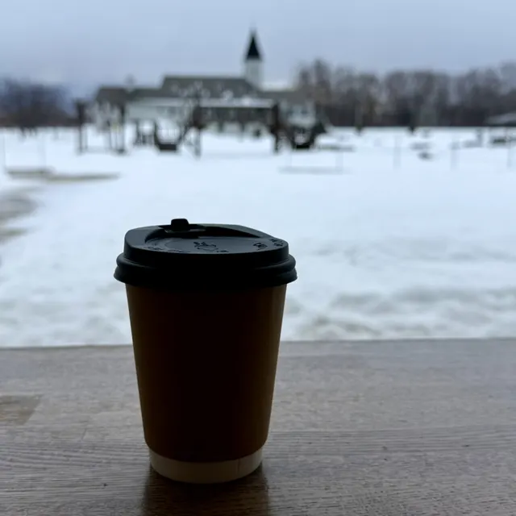
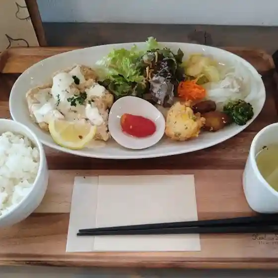
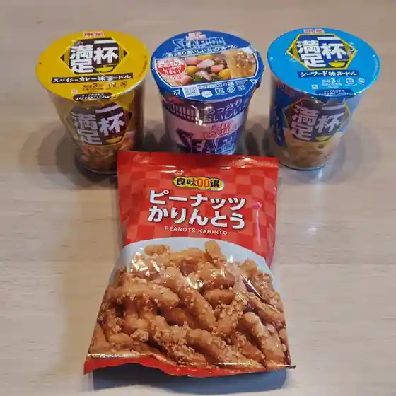
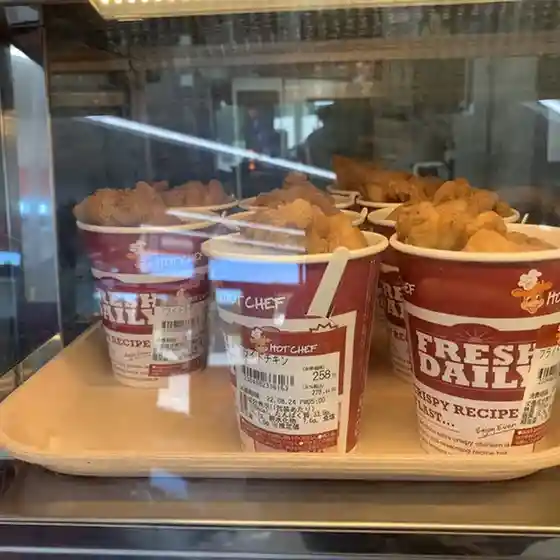
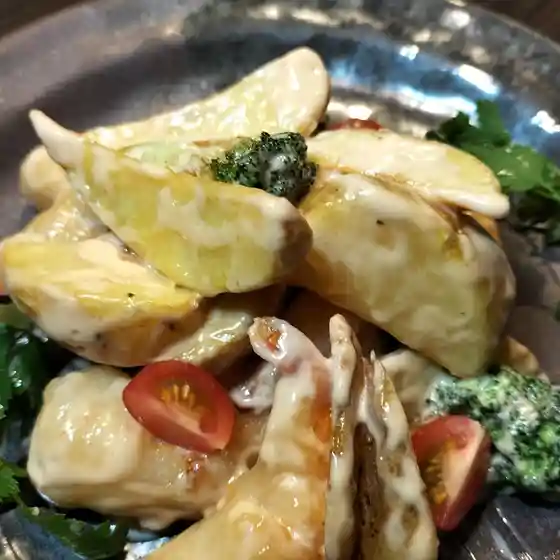
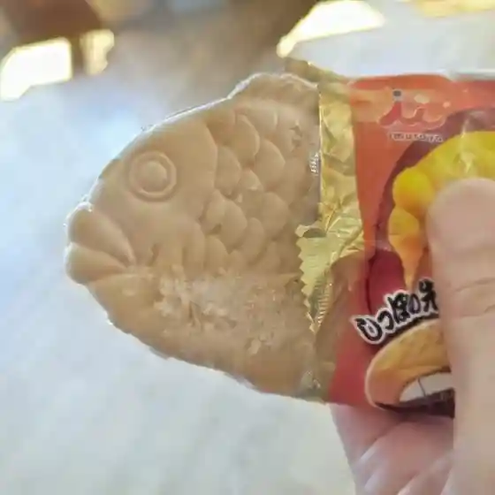

Japan / Hokkaido / Kiyosatocho
Kiyosatocho
Kiyosatocho · Hokkaido
Kiyosatocho
Highlighted on the Hokkaido map.

Stay
ホテル緑清荘
Hoteru Midori Kiyoshi Sou
清里イーハトーヴホステル

Kiyosato Iihatoovuhosuteru
Dining
セブンイレブン 清里羽衣店

Sebun'Irebun Kiyosato Hagoromo Mise
きよ～るカフェ

Kiyo ~ Ru Kafe
トコ トコ

Toko Toko
DCM ニコット 清里店

Dcm Nikotto Kiyosato Mise
セイコーマート 清里水元店

Seikoomaato Kiyosato Mizumoto Mise
炉憩

Ro Kei
清里イーハトーヴユースホステル

Kiyosato Iihatoovuyuusuhosuteru
清里オートキャンプ場 センターハウス

Kiyosato Ootokyanpu Ba Sentaahausu
シマムラクレープ
Shimamurakureepu
ら～麺 來々華
Ra ~ Men Rairai Hana
ロッジ 風景画
Rojji Fuukeiga
エーコープ きよさと店
Eekoopu Kiyosato Mise
秀峰庵
Shuuhou Iori
民宿・食事富士
Minshuku Shokuji Fuji
地球のめぐみのパン工房 Luna Llena
Chikyuu Nomegumino Pan Koubou Luna Llena
マルフ珈琲
Marufu Koohii
酒菜屋大田
Shusai Ya Oota
農家のパン屋 清里麦香房
Nouka No Pan Ya Kiyosato Mugi Koubou
コリン
Korin
毘和吉
Bi Wakichi
モンブラン菓子舗
Monburan Kashi Ho
おだし食堂 阿寒摩周清里店
Odashi Shokudou Akan Mashuu Kiyosato Mise
en処 towa
En Tokoro Towa
緑の湯
Midori No Yu